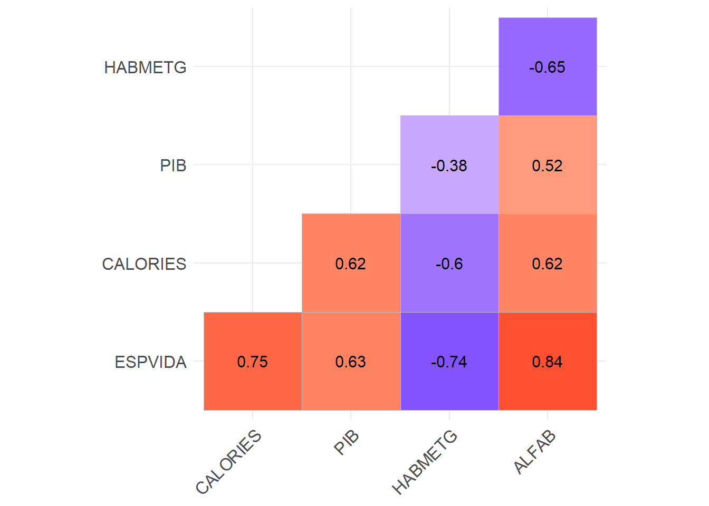
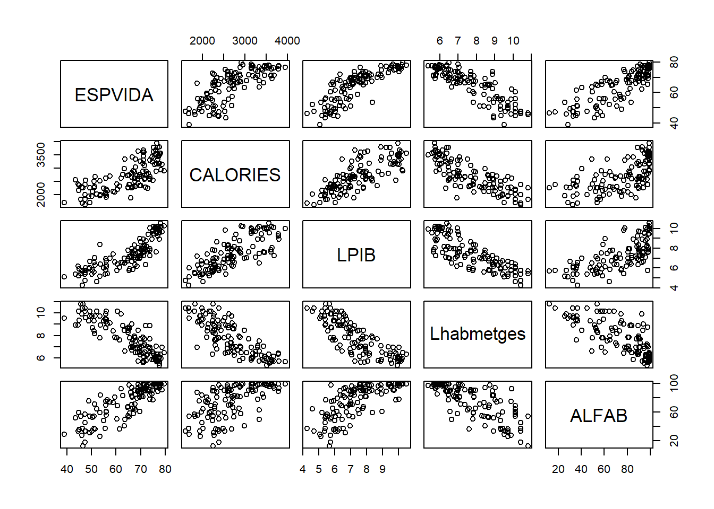
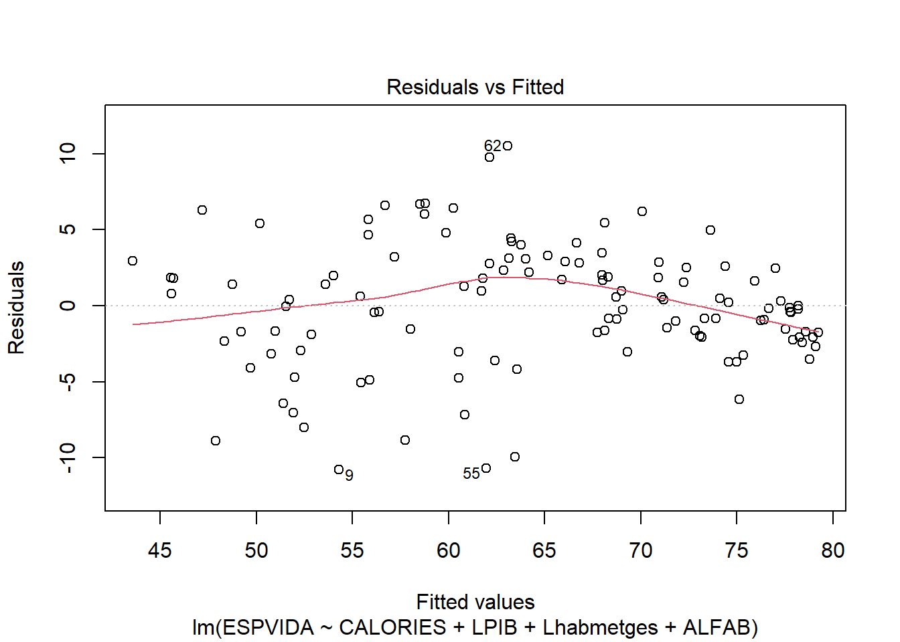

Capítol 3 Teoria Setmana 3
3.1 Repas dia anterior
3.1.0.1 PAISOS.SAV
Alerta! Correlació no indica sempre causalitat. Poden existir altres factors ocults amb un efecte sobre ambdós factors.
library(foreign)
data <- read.spss( "http://84.89.132.1/~satorra/dades/PAISOS.SAV", use.value.labels = TRUE, to.data.frame = TRUE )
data <- data %>% select(PAIS, ESPVIDA, CALORIES, PIB, HABMETG , ALFAB)
data <- na.omit(data)
rownames(data)<-NULL # reiniciem la numeracio de les files3.1.1 Regressió simple
data <- data %>% mutate(
LPIB = log(PIB)
,Lhabmetges = log(HABMETG)
)
reg1 <- lm(ESPVIDA ~ CALORIES, data=data)
reg2 <- lm(ESPVIDA ~ CALORIES + ALFAB, data=data )
reg3 <- lm(ESPVIDA ~ CALORIES + LPIB + Lhabmetges +ALFAB, data=data)
stargazer(reg1, reg2, reg3, type='text')##
## ==============================================================================================
## Dependent variable:
## --------------------------------------------------------------------------
## ESPVIDA
## (1) (2) (3)
## ----------------------------------------------------------------------------------------------
## CALORIES 0.014*** 0.007*** 0.001
## (0.001) (0.001) (0.001)
##
## LPIB 1.821***
## (0.452)
##
## Lhabmetges -2.388***
## (0.523)
##
## ALFAB 0.278*** 0.165***
## (0.025) (0.026)
##
## Constant 27.061*** 25.403*** 55.475***
## (3.135) (2.183) (7.637)
##
## ----------------------------------------------------------------------------------------------
## Observations 120 120 120
## R2 0.559 0.789 0.857
## Adjusted R2 0.555 0.785 0.852
## Residual Std. Error 7.107 (df = 118) 4.938 (df = 117) 4.098 (df = 115)
## F Statistic 149.611*** (df = 1; 118) 218.659*** (df = 2; 117) 172.404*** (df = 4; 115)
## ==============================================================================================
## Note: *p<0.1; **p<0.05; ***p<0.013.1.2 Regressió lineal simple
\[ Y = \beta_0 + \beta_1x + \epsilon \]
- La \(\beta_0\) terme independent
- La \(\beta_1\) coeficient de regressió
- La esperança, \(E(Y)=\beta_0+\beta_1E(x)\)
- El coeficient, \(\beta_1\) és un increment en el valor esperat de \(Y\) d’un augmenta unitari en la variable X
- El \(\epsilon\) és un terme de pertorbació, variable estadística \(\epsilon∼N(0,\sigma^2)\), valor esperat zero i variància constant. Noteu que la variància de \(\epsilon\) representa la intensitat de variació de Y al voltant de la recta de regressió \(Y=\beta_0+\beta_1x\).
Ajust de la regressió:
\[ Y = b_0 + b_1x + \epsilon \]
\(b_0=27.061\), \(b_1=0.014\), \(b_0\) i \(b_1\) són estimacions de \(\beta_0\) i \(\beta_1\) respectivament.
Totes les estimacions estan subjectes a un error tipus (standard error). En el nostre exemple: l’error tipus de l’estimació ´de \(beta_1=0.014\) és \(0.001\).
Coeficient de determinació múltiple, \(R^2=0.559\) és a dir, \(55.9%\) de la variació de \(Y\) és deguda a la variable X.
3.1.3 Regressió lineal múltiple
\[ Y = \beta_0 + \beta_1x_1 + \beta_2x_2 + \epsilon \]
- El \(\beta_0\) terme independent
- La \(\beta_1\), \(\beta_2\) coeficients de regressió parcial
- La Esperança: \(E(Y)=\beta_0+\beta_1E(x_1)+\beta_2E(x_2)\)
- \(\beta_2\) és un increment en el valor esperat de \(Y\) d’un augment unitari en la variable \(X_2\) quan \(X_1\) es manté constant. Idem per \(\beta_1\) (versus \(X_2\))
- \(\epsilon\) terme de perturbació, variable estadística \(\epsilon∼N(0,\sigma^2)\), valor esperat zero i variància constant. Noteu que la variància de \(\epsilon\) representa la intensitat de variació de Y al voltant de la recta de regressió \(Y=\beta_0+\beta_1x_1+\beta_2x_2\).
Regressió estimada:
\[ Y = b_0 + b_1x_1 + b_2x_2 \]
Els coeficients: \(b_0=25.403\); \(b_1=0.007\); \(b_2=0.278\)
El \(R^2=0.044\) és un \(4.4%\) de variació de \(Y\) ve explicada per la variació conjunta de \(X_1\) i \(X_2\).
3.2 Interpretació del model
3.2.1 Gráficament
3.2.1.1 Residus versus valors ajustats
plot(reg3,1)- verifiquem la homoscedasticitat
3.2.1.2 Análisis normalitat
Q-Q plot.
plot(reg3,2)
Densitat residus.
plot(density(residuals(reg3)))
3.2.1.3 Outlyers
Distancia de Cook.
plot(reg3,4)
data$PAIS[c(4,35,89)]## [1] "Sierra Leona " "Sri Lanka " "Gabon "Residus estandarditzats vs leverage
plot(reg3,5)3.2.2 Gràfics de regressio parcial
library(car)## Loading required package: carData## Warning: package 'carData' was built under R version 4.0.3##
## Attaching package: 'car'## The following object is masked from 'package:dplyr':
##
## recode## The following object is masked from 'package:purrr':
##
## some avPlots(reg3)Per obtenir només un gràfic.
avPlots(reg3, ~ CALORIES)3.3 Variance Inflation Factor (VIF)
Per identificar multicolinealitat entre les variables explicatives es pot usar el VIF o variance inflation factors (VIF). Com més gran es el calor, més alta la multicolinealitat. El VIF de una variable s’obté de la regressió d’aquesta contra la resta de variables del model: Es calcula el VIF per cada variable explicativa i aquelles amb valor més alt s’eliminen. LA frontera és arbitraria, tot i que s’acostuma a considerar valors superiors a 5 com a molt alts…
library(car)
vif(reg3)## CALORIES LPIB Lhabmetges ALFAB
## 3.250846 3.674479 4.517252 2.5246283.4 Dades del Bank
Dades de salaris en un banc.
Imagina que hi ha un plet en aquesta empresa sobre discriminació per raó de gènere. De fet, el salari actual dels homes és molt superior al de les dones.
Residus.
hist(d$SALBEG)
boxplot(SALNOW ~ SEX, data=d)t-test.
library(stargazer)
mod1 <- lm(SALNOW ~ SEX, data=d)
mod2 <- lm(log(SALNOW) ~ SEX, data=d)
stargazer(mod1,mod2, type='html')| Dependent variable: | ||
| SALNOW | log(SALNOW) | |
| (1) | (2) | |
| SEXFemales | -6,163.945*** | -0.412*** |
| (563.163) | (0.031) | |
| Constant | 16,576.710*** | 9.628*** |
| (380.164) | (0.021) | |
| Observations | 474 | 474 |
| R2 | 0.202 | 0.267 |
| Adjusted R2 | 0.201 | 0.266 |
| Residual Std. Error (df = 472) | 6,106.345 | 0.340 |
| F Statistic (df = 1; 472) | 119.798*** | 172.322*** |
| Note: | p<0.1; p<0.05; p<0.01 | |
Afegim covariables.
plot(SALNOW ~ AGE, data=d)
abline(lm(SALNOW ~ AGE, data=d), col="red")library(stargazer)
mod1 <- lm(SALNOW ~ SEX + AGE, data=d)
mod2 <- lm(log(SALNOW) ~ SEX + AGE, data=d)
stargazer(mod1,mod2, type='html')| Dependent variable: | ||
| SALNOW | log(SALNOW) | |
| (1) | (2) | |
| SEXFemales | -6,076.561*** | -0.404*** |
| (559.165) | (0.031) | |
| AGE | -71.209*** | -0.006*** |
| (23.651) | (0.001) | |
| Constant | 19,184.900*** | 9.862*** |
| (944.719) | (0.052) | |
| Observations | 474 | 474 |
| R2 | 0.217 | 0.303 |
| Adjusted R2 | 0.214 | 0.300 |
| Residual Std. Error (df = 471) | 6,054.832 | 0.332 |
| F Statistic (df = 2; 471) | 65.455*** | 102.470*** |
| Note: | p<0.1; p<0.05; p<0.01 | |